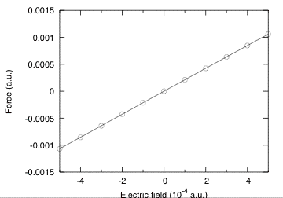
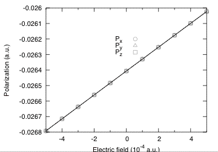
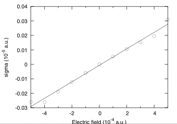

This lesson aims at showing how to get the following physical properties, for an insulator :
The case of the linear responses (Born effective charge, dielectric constant, piezoelectric tensor) is treated independently in other tutorials (lesson Response-Function 1, lesson on Elastic properties), using Density-Functional Perturbation Theory. You will learn here how to get these quantities using the finite difference techniques within ABINIT. To that end, we will describe how to compute the polarization, in the Berry phase formulation, and how to perform finite electric field calculations.
This lesson should take about 1 hour and 30 minutes to be done.
The basic theory for Berry phase computation of the polarization was proposed by R.D. King-Smith and D. Vanderbilt, Phys. Rev. B 47, 651 (1993). The longer (excellent) paper D. Vanderbilt and R.D. King-Smith, Phys. Rev. B 48, 4442 (1994) clarifies many aspects of this theory (especially in view of application to AlAs, as in this tutorial). One might benefit also from a reading of R. Resta, Rev. Mod. Physics 66, 899 (1994).
In order to gain the theoretical background needed to perform a calculation with a finite electric field, you should consider reading the following papers:
Before beginning, you might consider to work in a different subdirectory as for the other lessons. Why not create "Work-ffield" in ~abinit/tests/tutorespfn/Input ?
In this tutorial we will assume that the ground-state properties of AlAs have been previously obtained, and that the corresponding convergence studies have been done. We will adopt the following set of generic parameters :
acell 10.53
ixc 3
ecut 2.8 (results with ecut = 5 are also reported
in the discussion)
ecutsm 0.5
dilatmx 1.05
nband 4 (=number of occupied bands)
ngkpt 6 6 6
nshiftk 4
shiftk 0.5 0.5 0.5
0.5 0.0 0.0
0.0 0.5 0.0
0.0 0.0 0.5
pseudopotentials 13al.pspnc
33as.pspnc
In principle, the acell to be used should be the one corresponding to the optimized structure at the ecut, and ngkpt combined with nshiftk and shiftk, chosen for the calculations. Unfortunately, for the purpose of this tutorial, in order to limit the duration of the runs, we have to work at an unusually low cutoff of 2.8 Ha for which the optimized lattice constant is unrealistic and equal to 7.45 bohr (instead of the converged value of 10.64). In what follows, the lattice constant has been arbitrarily fixed to 10.53 bohr. For comparison, results with ecut=5 are also reported and, in that case, were obtained at the optimized lattice constant of 10.64 bohr. For those who would like to try later, convergence tests and structural optimizations can be done using the file ~abinit/tests/tutorespfn/Input/tnlo_1.in. Before going further, you might refresh your mind concerning the other variables : ixc, ecutsm, dilatmx.
In this section, you will learn how to perform a Berry phase calculation of the polarization. As a practical problem we will try to compute the Born effective charges from finite difference of the polarization (under finite atomic displacements), for AlAs.
You can now copy the file ~abinit/tests/tutorespfn/Input/tffield_1.in and ~abinit/tests/tutorespfn/Input/tffield_x.files in Work-ffield, and modify the latter as usual. You can start the calculation. It should take 90 seconds on a PC 3GHz. Then, examine the tffield_1.in file. It is made of three datasets corresponding to the reference optimized structure (tau=0) and to structure with the Al atom displaced from 0.01 bohr right and left (referred to as tau = +0.01 and tau = -0.01). This is typically the amplitude of atomic displacement to be considered in this kind of computations.
There are two implementation of the berry phase within ABINIT. One corresponds to positive values of berryopt and was implemented by NaSai. The other one corresponds to negative values of berryopt was implemented by Marek Veithen. Both are suitable to compute the polarization. Here we will focus on the implementation of Marek Veithen for two reasons. First, the results are directly provided in cartesian coordinate at the end of the run (while the implementation of NaSai reports them in reduced coordinates). Second the implementation of Marek Veithen is the one to be used for the finite electric field calculation as described in the next Section. Finally, note also that Veithen's implementation works with kptopt= 1 or 2 while Na Sai implementation is restricted to kptopt=2 which is less convenient.
The file is the one of a usual self-consistent calculation. On top of usual variables, for the berry phase calculation we simply need to define berryopt and rfdir:
berryopt -1
rfdir11 1 1 1
You can make the run. You can open the output file and look for the occurrence "Berry". The output report value of the Berry phase for individual k-point strings.
Computing the polarization (Berry phase) for reciprocal vector:
0.16667 0.00000 0.00000 (in reduced coordinates)
-0.01583 0.01583 0.01583 (in cartesian coordinates - atomic units)
Number of strings: 144
Number of k points in string: 6
Summary of the results
Electronic Berry phase -1.633637909E-02
Ionic phase -7.369993171E-01
Total phase -7.533356962E-01
Remapping in [-1,1] -7.533356962E-01
Polarization -1.569029714E-02 (a.u. of charge)/bohr^2
Polarization -8.977166249E-01 C/m^2
tau = 0
Polarization in cartesian coordinates (a.u.):
(the sum of the electronic and ionic Berry phase has been fold into [-1, 1])
Electronic: -0.589330682E-03 -0.589330682E-03 -0.589330682E-03
Ionic: -0.265870611E-01 -0.265870611E-01 -0.265870611E-01
Total: -0.271763918E-01 -0.271763918E-01 -0.271763918E-01
Polarization in cartesian coordinates (C/m^2):
(the sum of the electronic and ionic Berry phase has been fold into [-1, 1])
Electronic: -0.337184150E-01 -0.337184150E-01 -0.337184150E-01
Ionic: -0.152117239E+01 -0.152117239E+01 -0.152117239E+01
Total: -0.155489081E+01 -0.155489081E+01 -0.155489081E+01
tau = +0.01
Polarization in cartesian coordinates (a.u.):
(the sum of the electronic and ionic Berry phase has been fold into [-1, 1])
Electronic: -0.621428977E-03 -0.589348321E-03 -0.589348321E-03
Ionic: -0.264842841E-01 -0.265870611E-01 -0.265870611E-01
Total: -0.271057131E-01 -0.271764095E-01 -0.271764095E-01
Polarization in cartesian coordinates (C/m^2):
(the sum of the electronic and ionic Berry phase has been fold into [-1, 1])
Electronic: -0.355549113E-01 -0.337194243E-01 -0.337194243E-01
Ionic: -0.151529203E+01 -0.152117239E+01 -0.152117239E+01
Total: -0.155084694E+01 -0.155489181E+01 -0.155489181E+01
tau = -0.01
Polarization in cartesian coordinates (a.u.):
(the sum of the electronic and ionic Berry phase has been fold into [-1, 1])
Electronic: -0.557227851E-03 -0.589301321E-03 -0.589301321E-03
Ionic: -0.266898382E-01 -0.265870611E-01 -0.265870611E-01
Total: -0.272470660E-01 -0.271763625E-01 -0.271763625E-01
Polarization in cartesian coordinates (C/m^2):
(the sum of the electronic and ionic Berry phase has been fold into [-1, 1])
Electronic: -0.318816591E-01 -0.337167352E-01 -0.337167352E-01
Ionic: -0.152705275E+01 -0.152117239E+01 -0.152117239E+01
Total: -0.155893441E+01 -0.155488913E+01 -0.155488913E+01
From the previous data, we can extract the Born effective charge of Al. Values to be used are those in a.u., in order to find the charge in electron unit. It corresponds to (the volume of the primitive unit cell must be specified in Bohr too) :
Z* = \Omega_0 (P[tau=+0.01] - P[tau=-0.01]) / (2*tau)
= 305.39 (-0.271057131E-01 + -0.272470660E-01) / 0.02
= 2.16
Proper piezoelectric constants (clamped ion) (unit:c/m^2)
...
-0.64879283 0.00000000 0.00000000
...
Proper piezoelectric constants (relaxed ion) (unit:c/m^2)
...
0.04574987 0.00000000 0.00000000
Restarting case ffield_2 and ffield_3 with
ecut=5 (three minutes on a PC 3 GHz),
one gets
the following values
Proper piezoelectric constants (clamped ion) (unit:c/m^2)
...
-0.68377667 0.00000000 0.00000000
...
Proper piezoelectric constants (relaxed ion) (unit:c/m^2)
...
0.03384772 0.00000000 0.00000000
The latter value, where the ionic relaxation largely suppresses the electronic piezoelectricity,
will be much difficult to converge than the clamped ion result.
Using the Berry phase approach it is also possible to compute the piezoelectric constant from finite difference of polarization with respect to strains. This can be done considering clamped ions or relaxed ions configurations. For this purpose, have a look to the files ~abinit/tests/tutorespfn/Input/tffield_4.in (clamped ions) and ~abinit/tests/tutorespfn/Input/tffield_5.in (relaxed ions). They should give the following final results (obtained by taking finite difference expressions of the strains for different electric fields)
Proper piezoelectric constants(clamped ion)(Unit:c/m^2) = -0.6491 Proper piezoelectric constants(relaxed ion)(Unit:c/m^2) = 0.0430For example, the clamped ion piezoelectric constant was obtained from tffield_4.out :
Polarization in cartesian coordinates (C/m^2):
(the sum of the electronic and ionic Berry phase has been fold into [-1, 1])
Electronic berry phase: -0.230212263E-02 0.421671951E-02 0.421671986E-02
Expectation value (PAW only): 0.000000000E+00 0.000000000E+00 0.000000000E+00
Ionic: -0.154692152E+01 -0.155466099E+01 -0.155466099E+01
Total: -0.154922364E+01 -0.155044427E+01 -0.155044427E+01
and
Polarization in cartesian coordinates (C/m^2):
(the sum of the electronic and ionic Berry phase has been fold into [-1, 1])
Electronic berry phase: 0.106812992E-01 0.417465885E-02 0.417465885E-02
Expectation value (PAW only): 0.000000000E+00 0.000000000E+00 0.000000000E+00
Ionic: -0.154692152E+01 -0.153919172E+01 -0.153919172E+01
Total: -0.153624022E+01 -0.153501707E+01 -0.153501707E+01
The difference between -0.154922364E+01 (x-strain is +0.01) and -0.153624022E+01 (x-strain is -0.01)
gives the finite
difference -0.012983, that, divided by 0.02 (the change of strain) gives -0.6491, announced above.
Proper piezoelectric constants(clamped ion)(Unit:c/m^2) = -0.6909505 Proper piezoelectric constants(relaxed ion)(Unit:c/m^2) = 0.0326305in excellent agreement with the above-mentioned DFPT values.
You can now copy the file ~abinit/tests/tutorespfn/Input/tffield_6.in in Work-ffield, and modify the tffield_x.files accordingly. You can start the run immediately, it will take one minute on a PC 3GHz. It performs a finite field calculation at clamped atomic positions. You can look at this input file to identify the features specific to the finite field calculation.
As general parameters, one has to specify nband, nbdbuf and kptopt:
nband 4
nbdbuf 0
kptopt 1
As a first step (dataset 11), the code must perform a Berry phase calculation in zero field. For that purpose, it is necessary to set the values of berryopt and rfdir:
berryopt11 -1
rfdir11 1 1 1
Important warning: you cannot put berryopt to +1 for a finite field calculation. You mandatory need berryopt -1.
After that, there are different steps corresponding to various value of the electric field, thanks to efield. For those steps, it is important to take care of the following parameters here reported for dataset 21:
berryopt21 4
efield21 0.0001 0.0001 0.0001
getwfk21 11
The electric field is here applied along the [111] direction. It must be incremented step by step (it is not possible to go to high field directly). At each step, the wavefunctions of the previous step must be used. When the field gets larger, it is important to check that it does not significantly exceeds the critical field for Zener breakthrough (the drop of potential over the Born-von Karmann supercell must be smaller than the gap). In practice, the number of k-point must be enlarged to reach the convergence. However, at the same time, the critical field becomes smaller. In practice, reasonable fields can still be reached for k-point grids providing a reasonable degree of convergence. A compromize must however be found.
As these calculations are quite long, the input file has been limited to very small fields. Three cases have been selected : E = 0, E = +0.0001 and E = -0.0001. If you have time later, you can relax this constraint and perform a more exhaustive calculations for a larger set of fields.
You can now start the run. Various quantities can be extracted from the finite field calculation at clamped ions using finite difference techniques: the Z* can be extracted from the forces, the optical dielectric constant can be deduced from the polarization, the clamped ion piezoelectric tensor can be deduced from the stress tensor. As an illustration we will focus here on the computation of Z*.
You can look at your output file. For each field, the file contain various quantities that can be collected. For the present purpose, we can look at the evolution of the forces with the field and extract the following results from the output file :
E=0
cartesian forces (hartree/bohr) at end:
1 0.00000000000000 0.00000000000000 0.00000000000000
2 0.00000000000000 0.00000000000000 0.00000000000000
E = +0.0001
cartesian forces (hartree/bohr) at end:
1 0.00020614538503 0.00020614538503 0.00020614538503
2 -0.00020614538503 -0.00020614538503 -0.00020614538503
E = -0.0001
cartesian forces (hartree/bohr) at end:
1 -0.00020650900243 -0.00020650900243 -0.00020650900243
2 0.00020650900243 0.00020650900243 0.00020650900243
In a finite electric field, the force on atom A in direction i can be written as :
F_Ai = Z*_A,ii * E + \Omega_0 dchi/dtau E^2
The value for positive and negative fields above are nearly similar showing that the quadratic term is almost negligible. This clearly appears in the figure below where the field dependence of the force for a larger range of electric fields is plotted.

We can therefore extract with a good accuracy the Born effective charge as :
Z*_Al = (F_Al[E=+0.0001] - F_Al[E=-0.0001])/(2*0.0001)
= (0.00020614538503 + 0.00020650900243)/0.0002
= 2.06
This value is similar to the value reported from DFPT. If you do calculations for more electric fields, fitting them with the general expression of the force above (including the E^2 term) allow to determine the dchi/dtau. You can try to do it. At ecut=5 you should get dchi/dtau for Al = -0.06169. This will be useful for the lesson on static Non-linear properties.
Going back to the output file, you can also look at the evolution of the polarization with the field.
E=0
Polarization in cartesian coordinates (a.u.):
(the sum of the electronic and ionic Berry phase has been fold into [-1, 1])
Electronic: 0.730821479E-04 0.730821479E-04 0.730821479E-04
Ionic: -0.270560574E-01 -0.270560574E-01 -0.270560574E-01
Total: -0.269829753E-01 -0.269829753E-01 -0.269829753E-01
E = +0.0001
Polarization in cartesian coordinates (a.u.):
(the sum of the electronic and ionic Berry phase has been fold into [-1, 1])
Electronic: 0.129869542E-03 0.129869542E-03 0.129869542E-03
Ionic: -0.270560574E-01 -0.270560574E-01 -0.270560574E-01
Total: -0.269261879E-01 -0.269261879E-01 -0.269261879E-01
E = -0.0001
Polarization in cartesian coordinates (a.u.):
(the sum of the electronic and ionic Berry phase has been fold into [-1, 1])
Electronic: 0.163575373E-04 0.163575372E-04 0.163575371E-04
Ionic: -0.270560574E-01 -0.270560574E-01 -0.270560574E-01
Total: -0.270396999E-01 -0.270396999E-01 -0.270396999E-01
In a finite electric field, the force on atom A in direction i can be written as :
P = \chi * E + \chi(2) E^2
The change of polarization for positive and negative fields above are nearly similar showing that the quadratic term is almost negligible. This clearly appears in the figure below where the field dependence of the force for a larger range of electric fields is plotted.

We can therefore extract with a good accuracy the linear optical dielectric susceptibility :
\chi(l)_11 = (P[E=+0.0001] - P[E=-0.0001])/(2*0.0001)
= (-0.269261879E-01+ 0.270396999E-01)/0.0002
= 0.56756
The optical dielectric constant is :
\epsilon_11 = 1+ 4 \pi \chi(1)_11
= 8.13
This value underestimate the value of 9.20 obtained by DFPT. The agreement is not better at ecut=5. If you do calculations for more electric fields, fitting them with the general expression of the force above (including the E^2 term) allows one to determine the non-linear optical susceptibilities \chi(2). You can try to do it. At ecut=5 you should get \chi(2) = 29.769 pm/V. This result will be useful lesson on static Non-linear properties.
Looking at the evolution of the stress (see graphic below), you should also be able to extract the piezoelectric constants. You can try to do it as an exercice. As the calculation here was at clamped ions, you will get the clamped ion proper piezoelectric constants. At ecut=5, you should obtain -0.69088 C/m^2.

Redoing the same kind of finite field calculation when allowing to the ions to relax , one can access the relaxed ion proper piezoelectric constant. At ecut=5 the result is -0.03259.